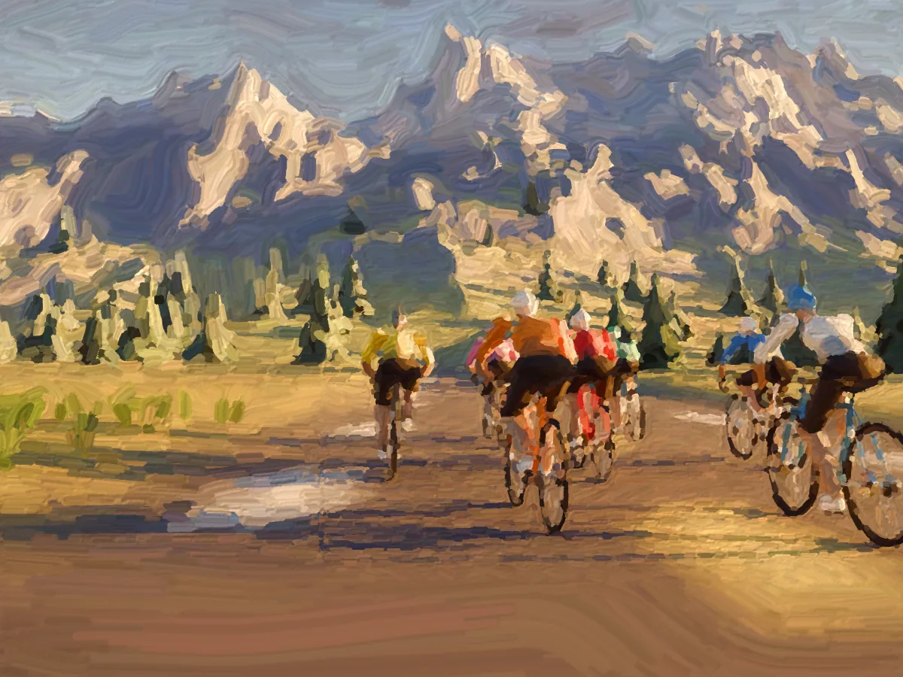

Not racing, not commuting, not camping: just riding for fun, for fitness, or to clear your head. Tell us where you ride, how far you go and how you like to sit, and we measure real city, hybrid and gravel bikes against that, then explain why the top match fits.
Start matching
Fig. 001: the kind of ride this quiz is for
No sales pitch and no single-brand catalog. The bikes come from our verified commuting and gravel catalogs, because those are the bikes people actually buy for relaxed and fitness riding.
Where you ride, how far from home you go, power preference, your height and your budget.
A bike that doesn't fit you or can't take your surface is ruled down; a great fit a little over budget isn't ruled out.
Ranked with plain-language reasons, and a clear note wherever a bike's record doesn't say something.
Six short questions to start, answered one at a time. The rest are optional, and none of it needs bike jargon.
Your rides
This decides the type of bike: relaxed and easy, or quicker and farther.
The farthest point of a typical outing, one way. A 20 km out-and-back ride is 10 km.
Frame fit is the biggest factor in comfort, so each bike is checked against the height range its maker recommends.
Comfort & preferences
Optional. Just answer how it feels; we translate it into the right spec.
Pick where you ride and a power preference first.
Casual riding has no catalog of its own yet. This quiz draws on our verified commuting bikes (hybrids and city bikes) and the widely sold gravel and touring bikes from our bikepacking catalog, and it says so wherever a bike's record does not list something, such as a comfortable ride distance for gravel bikes.